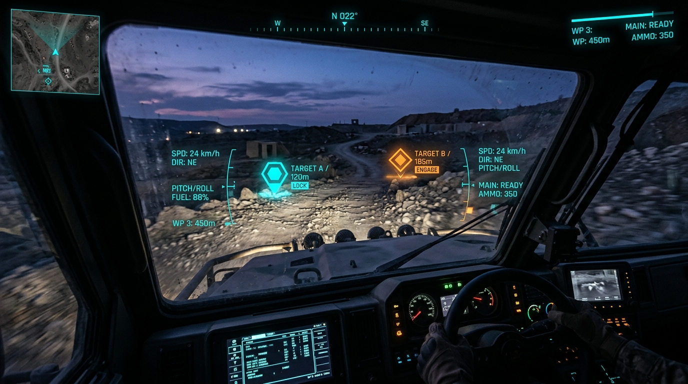

NAVIGATION & MOTION
0.0°
N
SPEED
SPEED LIMIT
DISTANCE
POSITION & TASK STATUS
COORDINATES
WAYPOINT STATUS
MISSION PHASE
ARM STATUS
COMMAND CONSOLE
validated
CONSOLE STANDBY
⌨️ KEYBOARD: W/A/S/D/ARROWS • 🎮 GAMEPAD: LEFT STICK=ROTATION, RIGHT STICK=THROTTLE, R2=BOOST, TOUCHPAD=ESTOP

CAM_01
REC 00:00:00:00
MISSION SIMULATOR & TESTS
READY
Launch real-time simulation containers or run the backend automated DDS tests.
System ready for diagnostics
GLOBAL TEAM MESH
0 PEERS
DISCOVERY
CONNECTED MESH PEERS
0 / 0
No active mesh links.
Awaiting connections...
LIDAR SCAN VIEW
OFFLINE
SAFETY DIAGNOSTICS
Mech E-Stop
CLEAR
Wire E-Stop
CLEAR
Op E-Stop Trig
CLEAR
Laser Blocked
CLEAR
Touch Sensor
CLEAR
Collision Det
CLEAR
Geofence Cross
CLEAR
Geofence Warn
CLEAR
PERCEPTION ENGINE
--%
TRACKING
CONFIDENCE
Lane Tracking
--
Obstacles
--
Laser Array
--
Throughput
-- FPS
Heartbeat
-- sec
LINK QUALITY
RF BRIDGE
-- dBm
TRANSCEIVER
Packet Loss
-- %
Stream Rate
-- FPS
Heartbeat Seq
#0
MISSION & PAYLOAD
Mission Phase
--
Arm Status
--
WHEEL MOTOR COMMANDS
Front Left (FL)
0.00
Front Right (FR)
0.00
Rear Left (RL)
0.00
Rear Right (RR)
0.00